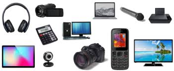

Online Shopping
- fashion
- electronics
- grocery
- personal care
Electronics :

What is Electronics :
The term electronics is derived from the word “electrons”. Electronics is a branch of Physics that deals with the theory and use of devices in which the electrons travel through a vacuum, gas, or a semiconductor medium. The motion of electrons takes place under the influence of applied electric and/or magnetic fields.
Electronics is a vast field that is classified as:
Physical Electronics
Electronics Engineering
Physical electronics helps to understand the motion of electrons in mediums like vacuum, gas, or semiconductor. Electronics engineering concentrates on the design, fabrication, and application of electronic devices. Electronics have developed rapidly from large circuits to small and powerful integrated circuits. Let us know in detail about various inventions in electronics and applications of electronics.
Inventions in Electronics :
Electronics have evolved around three components like vacuum tubes, transistors, andtegrated circuits.
In 1883, the great Physicist Thomas Alva Edison found that electrons flow from one metal to another through a vacuum. This theory was known as the Edison Effect and it deals with conductors.
John Fleming in 1897 applied the Edison Effect to invent a two-element electron tube known as a diode.
The device used for amplification and transmission of electrical energy, known as triode, was discovered in the year 1906 by Lee de Forest. Triode is a three-element tube that was developed using the Edison Effect.
Later in 1948, scientists Walter Brattain, John Bardeen, and William Shockley developed a device known as a transistor at Bell Laboratories. This invention was awarded the Nobel Prize.
Vacuum tubes were replaced by metal transistors since they offer longer life, low cost, efficiency, are light in weight, have less power consumption, and are smaller in size.
The concept of an integrated circuit was put forth in 1952 by Geoffrey W. A. Dummer.
Later in the 1960s, the full swing production of integrated circuits started.
Some of the devices that use integrated circuits are video cameras, microcomputers, medical equipment, and communication satellites.
What are the Applications of Electronics :
In our day-to-day life, we witness electronics playing a major role around us. If you look around, any time you can definitely spot one or another device that works with electricity. Hence, electronics have become part of our living. Let us know some of the applications of electronics.
Electronics are widely used in the automobile industry in engine control and car-entertainment systems.
It is used in utility systems like boiler feed pumps, high voltage DC transmission, static circuit breakers, and smart grid systems.
Electronics plays an important role in the aerospace industry.
Health care is one of the vital sectors which uses electronics in all activities. Electrocardiogram (ECG), ultrasound, X-ray, NMR, and many more procedures use electricity.
The advancement of technology has become possible due to electronics. Robotic checkups are possible due to electronics.
Office spaces use electronics to power appliances like air conditioners, elevators, lights, laptops, printers, fax machines, and desktops.
The backbone of our country, agriculture is also dependent on electricity for watering crops using motors, and it is also used in remote monitoring of crops and soil moisture.
A concept which revolutionised the world is the internet, electricity is the key for internet operation. Transfer of data from a server to the computers and from computers to servers takes place with the help of electricity.
In the food industry, electronics are used to store food in temperature-controlled storage.
Entertainment is one of the sectors which is largely dependent on electricity. Projector screens, televisions, radio, cameras, MP3 or MP4 portable players, smartphones, and iPods use electricity to operate.
In the image processing field, 3D images and 2D images are developed with electronic media.